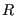
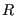
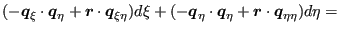
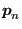
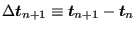
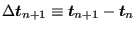

To find the tangent contact stiffness matrix, please look at Figure
134, part a). At
the beginning of a concrete time increment, characterized by time  , the
slave node at position
corresponds to the projection vector
on the master side. At the end of the time increment,
characterized by time
, the
slave node at position
corresponds to the projection vector
on the master side. At the end of the time increment,
characterized by time  both have moved to positions
both have moved to positions
 and
and
 , respectively. The
differential displacement between slave and master surface changed during this increment by the vector
satisfying:
, respectively. The
differential displacement between slave and master surface changed during this increment by the vector
satisfying:
Here, satisfies
 |
(186) |
Since (the dependency of on  and  is dropped to
simplify the notation)
and  is dropped to
simplify the notation)
| (187) |
| (188) |
| (189) |
![$\displaystyle \boldsymbol{q}_{n+1}= \sum_j \varphi_j \left[ \boldsymbol{X_j} + (\boldsymbol{u_j})_{n+1} \right ],$](img861.png) |
(190) |
this also amounts to
| (191) |
Notice that the local coordinates take the values of time  (the
superscript m denotes iteration m within the increment). The
differential tangential displacement now amounts to:
(the
superscript m denotes iteration m within the increment). The
differential tangential displacement now amounts to:
| (192) |
where
| (193) |
Derivation w.r.t.
 satisfies (straightforward
differentiation):
satisfies (straightforward
differentiation):
 |
(195) |
and
 |
(196) |
The derivative of
w.r.t.
 can be obtained
from the derivative of
can be obtained
from the derivative of
 w.r.t.
w.r.t.
 by keeping
by keeping
 and fixed (notice that the derivative is taken at
and fixed (notice that the derivative is taken at  ,
consequently, all derivatives of values at time
,
consequently, all derivatives of values at time  disappear):
disappear):
 |
(197) |
Physically, the tangential contact equations are as follows (written at the location of slave node p):
| (198) |
|  | (199) |
| (200) |
 |
(201) |
First, a difference form of the additive decomposition of the differential tangential displacement is derived. Starting from
| (202) |
one obtains after taking the time derivative:
| (203) |
Substituting the slip evolution equation leads to:
 |
(204) |
and after multiplying with  :
:
| (205) |
Writing this equation at  , using finite differences
(backwards Euler), one gets:
, using finite differences
(backwards Euler), one gets:
where
and
. The parameter  is assumed to be independent of time.
is assumed to be independent of time.
Now, the radial return algorithm will be described to solve the governing
equations. Assume that the solution at time  is known,
i.e.
and
is known,
i.e.
and
 are known. Using the stick
law the tangential forc
are known. Using the stick
law the tangential forc
 can be calculated. Now we would
like to know these variables at time
can be calculated. Now we would
like to know these variables at time  , given the total differential
tangential displacement
. At first we construct a trial
tangential force
, given the total differential
tangential displacement
. At first we construct a trial
tangential force
 which is the force which
arises at time
which is the force which
arises at time  assuming that no slip takes place from
assuming that no slip takes place from  till
till
 . This assumption is equivalent to
. This assumption is equivalent to
 . Therefore, the trial tangential
force satisfies (cf. the stick law):
. Therefore, the trial tangential
force satisfies (cf. the stick law):
|  | (207) |
Now, this can also be written as:
| (208) |
or
| (209) |
Using Equation (206) this is equivalent to:
 |
(210) |
or
From the last equation one obtains
| (212) |
and, since the terms in brackets in Equation (211) are both positive:
The only equation which is left to be satisfied is the Coulomb slip limit. Two possibilities arise:
In that case the Coulomb slip limit is satisfied and we have found the solution:
| (214) |
and
No extra slip occurred from  to
to  .
.
In that case we project the solution back onto the slip surface and
require
. Using Equation (213) this leads to the
following expression for the increase of the consistency parameter  :
:
 |
(216) |
which can be used to update
 (by using the slip
evolution equation):
(by using the slip
evolution equation):
 |
(217) |
The tangential force can be written as:
 |
(218) |
Now since
| (219) |
and
![$\displaystyle \frac{\partial }{\partial \boldsymbol{b} } \left (\frac{\boldsymb...
...ght ) \right ] \cdot \frac{\partial \boldsymbol{a} }{\partial \boldsymbol{b} },$](img906.png) |
(220) |
where and are vectors, one obtains for the derivative of the tangential force:
 |
![$\displaystyle = \mu \boldsymbol{\xi }_{n+1} \otimes \left [ \frac{\boldsymbol{F...
...t \frac{\partial \boldsymbol{F_N}_{n+1}}{\partial \boldsymbol{t}_{n+1}} \right]$](img910.png) |
|
| (221) |
where
| (222) |
One finally arrives at (using Equation (215)
All quantities on the right hand side are known now (cf. Equation (170) and Equation (194)).
In CalculiX, for node-to-face contact, Equation (185) is reformulated
and simplified. It is reformulated in the sense that
 is
assumed to be the projection of
is
assumed to be the projection of
 and
is written as (cf. Figure 134, part b))
and
is written as (cf. Figure 134, part b))
 |
(224) |
Part a) and part b) of the figure are really equivalent, they just represent
the same facts from a different point of view. In part a) the projection on
the master surface is performed at time  , and the differential displacement is
calculated at time
, and the differential displacement is
calculated at time  , in part b) the projection is done at time
, in part b) the projection is done at time
 and the differential displacement is calculated at time
and the differential displacement is calculated at time  .
Now, the actual position can be written as the sum of the undeformed position
and the deformation, i.e.
.
Now, the actual position can be written as the sum of the undeformed position
and the deformation, i.e.
 and
leading to:
and
leading to:
| (225) |
Since the undeformed position is no function of time it drops out:
| (226) |
or:
| (227) | ||
| (228) |
Now, the last two terms are dropped, i.e. it is assumed that the
differential deformation at time  between positions
between positions
 and
 is neglegible compared to
the differential motion from
and
 is neglegible compared to
the differential motion from  to
to  . Then the expression for
simplifies to:
. Then the expression for
simplifies to:
| (229) |
and the only quantity to be stored is the difference in deformation between
 and
and
 at the actual time and at the time of
the beginning of the increment.
at the actual time and at the time of
the beginning of the increment.